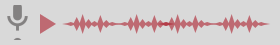

<ion-header>
  <ion-toolbar>
    <ion-buttons slot="start">
      <ion-icon name="arrow-back-outline" size="large" [routerLink]="['/calendario']" routerLinkActive="router-link-active" ></ion-icon>
    </ion-buttons>
    <ion-title>Nombre de la tarea</ion-title>
    <ion-buttons slot="end">
      <ion-icon name="pencil" size="large" [routerLink]="['/editar-tarea']" routerLinkActive="router-link-active" ></ion-icon>
    </ion-buttons>
    <ion-buttons slot="end">
      <ion-icon name="trash" size="large" (click)="presentAlert()"></ion-icon>
    </ion-buttons>
  </ion-toolbar>
</ion-header>

<ion-content>
  <ion-grid class="gridDetalles">
    <ion-row>
      <ion-col>Hora alarma: </ion-col>
      <ion-col>08:00 am</ion-col>
    </ion-row>
    <ion-row>
      <ion-col>Descripción:</ion-col>
      <ion-col>Esta es la tarea número 1 que fue creada como prueba para los wireframes de la aplicación móvil. </ion-col>
    </ion-row>
  </ion-grid>
  
  
  <ion-button  [routerLink]="['/lista-tareas']" routerLinkActive="router-link-active">Realizado</ion-button>

</ion-content>
